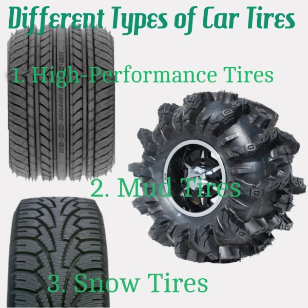
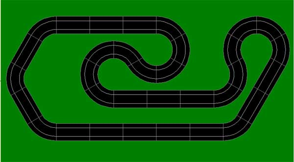

Learning is WILD
This part of the scientific method one identifies a question or problem that needs solved and does extensive research on the topic.
Example: Do highway tires get better gas mileage than all terrain tires? After a question is asked,
the person conducting the problem solving process, needs to do a lot of research to find
out all they know about the topic before one starts experimenting.
Different types of tires 
After the research is done, you need to predict the answer to the problem or in other words: an educated guess. Example: If a car has highway tires, it will get better gas mileage.
Plan a test/procedure to find out if your hypothesis is correct. Make sure there are control variables. Example: Using the same car, put a set of highway tires on, put one gallon of gas in an empty tank and drive until the car runs out of gas. Record distance traveled around the track. Then after the test was complete, make all the control groups the same by filling one gallon of gas into an empty tank of the same car, replace the highway tires with the All-Terrain tires, and drive the same track until car is empty.
Items needed for the Experiment
This is an example of a test track

Record all the "data" that was taken.
Observe the data that was taken and check and see if the hypothesis was correct.
Give credit to all the research that you found. *Tips on making a